1. 앱을 열고, 하고 싶은 작업부터 시작하세요
Ubuntu 앱 목록에서 OpenCV 티칭을 실행하세요. 터미널에서는 opencv-teach를 입력해도 됩니다. il 환경이 적용되며 실행 모드와 로봇 프로필을 선택합니다.
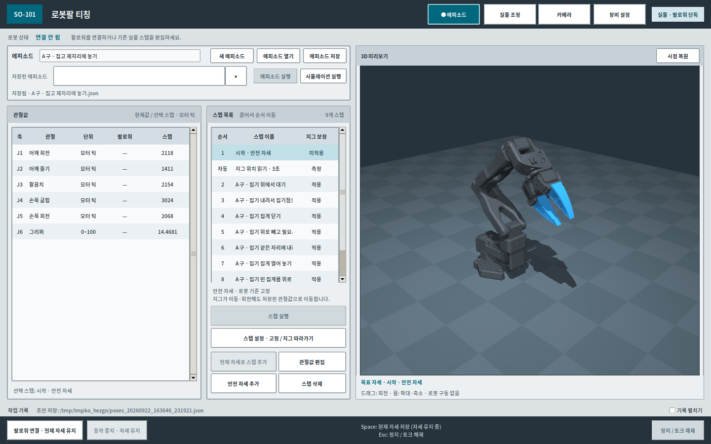
에피소드 / 실물 조정 / 카메라 / 장비 설정으로 같은 창의 화면을 바꿉니다. ← 뒤로 / 에피소드로로 돌아오며 연결·정지 버튼은 아래에 계속 보입니다.
팔의 자세를 저장하려면 아래의 ‘팔로워 연결 · 토크 꺼짐’부터, 지그 감지만 확인하려면 위의 ‘카메라’부터 시작하세요. 카메라 확인에 로봇 연결은 필요하지 않습니다.
현재 메뉴는 청록색과 ●로 표시합니다. 스텝 순서는 드래그로 바꾸며, 긴 스텝 실행 버튼 아래에서 안전 자세 추가·스텝 삭제를 사용합니다.
2. 티칭 기준 자동 저장과 스텝별 보정

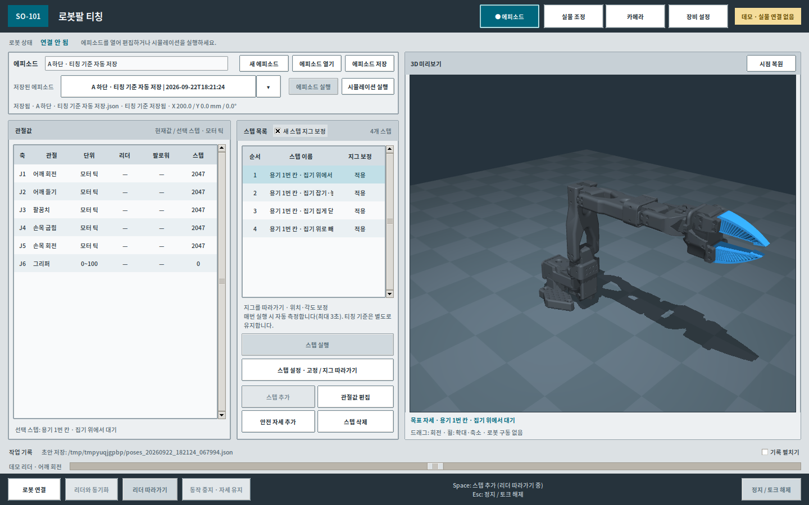
- 에피소드를 선택하면 카메라에서 티칭 기준을 자동으로 읽습니다. 상단 저장 상태에서 결과를 확인하세요.
- 지그는 그대로 두고 팔을 원하는 위치로 조정합니다. 팔에 가려져도 티칭 기준은 유지됩니다.
- 스텝 목록 위의 새 스텝 지그 보정을 선택합니다. 켜면 지그 상대 위치·방향, 끄면 고정 관절값입니다.
- 스텝 추가를 누릅니다. 실물 조정 화면에서도 ‘저장 시 지그 보정’을 선택할 수 있습니다.
- 기존 스텝은 스텝 설정 · 고정 / 지그 따라가기에서 바꿀 수 있습니다. 같은 티칭 기준을 사용합니다.
- 마지막에 에피소드 저장을 누릅니다. 안전 자세는 항상 고정입니다.
지그 보정 스텝을 실행할 때는 매번 새 지그 위치를 읽습니다. 전체 에피소드는 시작 안전 자세에 도착한 뒤 측정합니다. 실행 기준은 저장할 때 사용한 티칭 기준을 덮어쓰지 않습니다.
3. 실행할 때 지그 기준 자동 저장
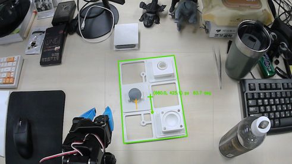
이전 측정 예시(17:01): X 231.3 / Y −100.4mm / −172.9°
3초, 정밀 3회·중간 5회, 이상값 1개 제외. CAD 좌표 보정 기준이며 실제 팔은 움직이지 않았습니다.
- 에피소드 선택: 카메라를 연결하고 티칭 기준을 자동으로 읽습니다.
- 팔을 조정: 티칭 중 지그는 고정입니다. 팔에 가려져도 처음 기준을 유지합니다.
- 스텝 저장: ‘새 스텝 지그 보정’을 켜면 상대 위치·방향, 끄면 고정 관절값을 저장합니다.
- 실행: 지그 보정 스텝은 매번 새 위치를 읽습니다. 전체 에피소드는 시작 안전 자세 도착 후 측정합니다.
- 실행 기준은 티칭 기준을 덮어쓰지 않습니다. 지그를 옮겼다면 ‘티칭 기준 다시 읽기’를 누릅니다.
최대 3초: 정밀 포함 측정 2개면 즉시 확정합니다. 3초 시점에는 정밀 1개 또는 일관된 중간 2개도 사용합니다.
중앙값 반경 3mm·각도폭 5° 밖의 값은 제외합니다. 가중치는 (정밀 3 / 중간 1) × 검출 신뢰도²입니다. 미검출·여러 후보·오래된 영상은 사용할 수 없습니다.
모델 기준값과 실제 파지 결과는 구분합니다.
4. 리더암 없이 실물을 보며 위치 맞추기

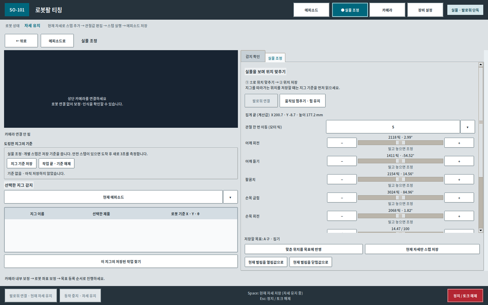
팔에 가려져도 저장한 기준을 유지합니다. 다음 도킹이나 지그 이동 후에는 티칭 기준 다시 읽기, 작업을 마치면 작업 끝 · 기준 해제를 누르세요.
안전 자세·도킹 완료는 사용자가 확인합니다. 자동 신호 연동은 없습니다. 앱 재실행, 카메라 중단, 보정·지그 설정 변경 시 기준을 새로 읽어야 합니다. 가려진 동안의 이동은 자동 확인할 수 없습니다.
- 카메라을 열고 카메라를 연결합니다. 에피소드 선택 시 티칭 기준을 자동으로 읽습니다. 필요하면 ‘티칭 기준 다시 읽기’를 누릅니다.
- 실물 조정 → 팔로워 연결 후 관절별 − / +로 조정합니다. 한 번에 1 / 5 / 10 / 20 / 50 모터 틱, 집게 벌림은 1 / 2 / 5씩입니다.
- 집게 끝을 직선으로 조금씩 이동은 X·Y·높이·방향을 조정합니다. X·Y는 로봇 기준입니다.
- 맞춘 위치를 목표에 반영하면 저장한 지그 기준에 대한 집기·놓기 위치와 방향을 계산합니다. 그 순간 지그가 보이지 않아도 됩니다.
- 현재 자세 스텝 저장에서 ‘저장 시 지그 보정’을 켜면 고정된 티칭 기준에 대한 상대 위치를 저장합니다. 끄면 관절값만 저장합니다. 마지막에 메인 화면에서 에피소드를 저장하세요.
멈추기 · 힘 유지는 이동을 취소하고, 빨간 정지 / 토크 해제는 모터 힘도 풉니다. 목표 저장만으로 보정 완료 처리되지는 않습니다.
5. 상단 카메라에서 지그가 보이는지 먼저 확인하기

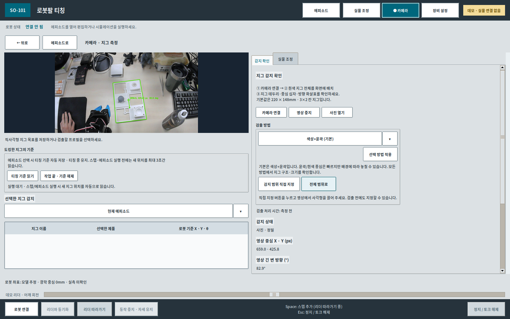
- 카메라 → 감지 확인에서 카메라 연결을 누릅니다.
- 흰색 하위 지그의 전체 바깥 테두리가 보이도록 놓습니다. 지그 크기와 직사각형·도넛형을 등록값에 맞춰 선택합니다.
- 영상의 테두리·중심 십자·긴 변 방향과 오른쪽 수치를 확인합니다.
| 초록 · 정밀 | 구조와 외곽 에지를 확인했습니다. 정밀이 포함된 일관된 측정 2개면 즉시 기준을 확정합니다. |
|---|---|
| 주황 · 중간 | 정밀 검출과 함께 검사합니다. 회색·낮음과 여러 후보는 제외합니다. |
| 중심 / 각도 | 원근을 고려한 중심(px)과 영상 긴 변 방향입니다. 오른쪽 0°, 시계방향 +, 0~180°이며 로봇 각도와 다릅니다. |
검출 방법에서 색상+윤곽 / 윤곽 중심 / 흰색 중심을 선택하고 적용합니다. 기본 방식이 가장 넓은 조건을 다룹니다. 범위를 설정할 지그를 선택하고 감지 범위 직접 지정을 사용합니다. 지그별 범위는 독립적으로 저장됩니다.
도넛형은 외곽과 내부 구멍을 검사하고 STL이 있으면 구멍 배치를 참고합니다. 구멍이 없는 지그는 직사각형을 선택하세요. 최대 3초 수집합니다. 정밀 포함 2개면 즉시 확정하며, 기한에는 정밀 1개 또는 일관된 중간 2개도 사용합니다. 중앙값 반경 3mm·각도폭 5° 밖의 값을 제외한 가중평균입니다. 픽셀 중심·각도는 영상 참고값입니다. 저장용 기준은 로봇 좌표의 측정 절차 하나로 확정합니다.
6. 렌즈 보정은 이미 저장돼 있습니다

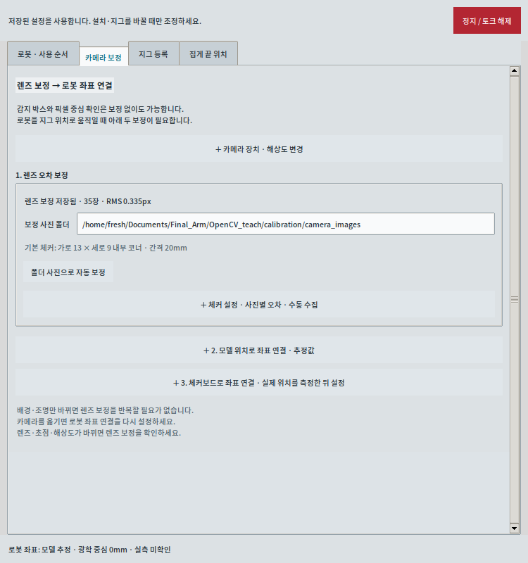
현재 렌즈 보정: 35장 / RMS 약 0.335px.
이는 사진에서의 재투영 오차이며, 로봇의 집기 오차 0.335mm를 뜻하지 않습니다.
사진을 추가하거나 다시 보정할 때:
- 카메라 보정 탭에서 사진 폴더를 확인합니다. 현재는
/path/to/Final_Arm/OpenCV_teach/calibration/camera_images입니다. - 폴더 사진으로 자동 보정을 누르면 코너 검출 → 계산 → 저장까지 진행합니다.
- 저장 장수·오차·안내 문구를 확인합니다. ‘체커 설정 · 사진별 오차 · 수동 수집’을 펼치면 개별 오차를 볼 수 있습니다.
폴더 사진과 카메라 해상도가 다르면 그 사진은 제외됩니다. 렌즈 보정을 새로 적용하면 기존 로봇 좌표 보정은 해제됩니다.
배경·조명 변화만으로 재보정할 필요는 없습니다. 카메라/렌즈/초점 변경은 재보정, 해상도/크롭 변경은 그 설정에 맞는 보정 확인이 필요합니다.
7. 카메라 위치를 로봇 좌표와 연결하기

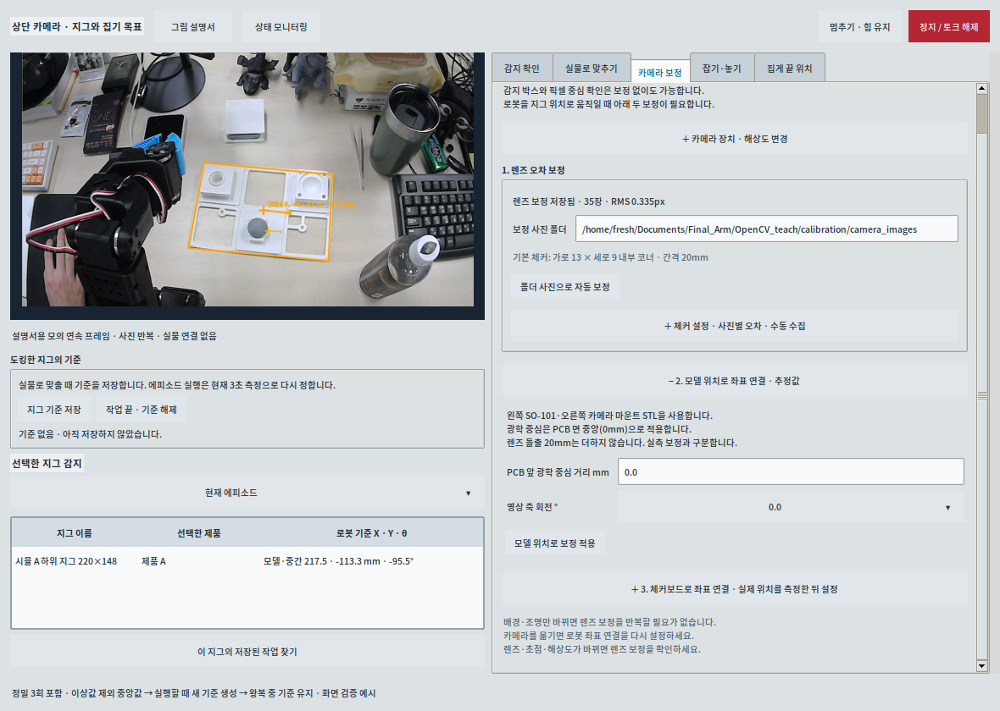
렌즈 보정은 이미지 왜곡을 줄입니다. 로봇 좌표 보정은 카메라가 로봇 베이스의 어디에 있는지 연결합니다.
- 상단 카메라와 로봇을 고정하고, 체커보드를 수평으로 놓습니다.
- 실시간 영상을 켜고 기준판 방향 보기를 누릅니다. 영상에 표시된 0, +X, ROW를 확인합니다.
- 로봇 베이스 기준으로 0번 내부 코너의 X·Y·Z(mm)와 코너 열의 방향 각도를 측정해 입력합니다. 영상의 +X는 로봇 +X와 항상 같지 않습니다.
- ROW 방향이 기준의 +Y인지 −Y인지 선택하고 실측 확인을 체크합니다.
- 로봇 좌표 보정 저장 후, 보정에 쓰지 않은 별도 기준점에서도 실제 mm 오차를 확인합니다.
현재는 CAD 모델 추정 보정이 적용돼 있습니다. 광학 중심은 사용자 지정 PCB 면 중앙 0mm이며 렌즈 돌출 20mm를 더하지 않습니다. 중심은 약 (26.0, −116.0, 545.7)mm, 기울기는 25°입니다. 위 절차로 실측 보정할 수 있습니다.
8. 선택한 지그로 티칭하고 시뮬레이션 확인
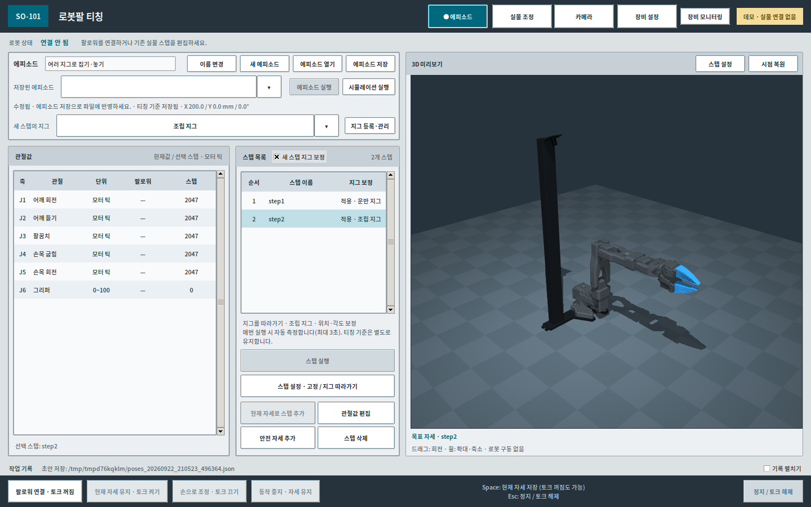
- 새 에피소드를 열고 새 스텝의 지그에서 등록한 지그를 선택합니다.
- 카메라로 티칭 기준을 읽은 뒤 실물 자세를 맞춥니다.
- 새 스텝 지그 보정을 켜고 저장하면 선택 지그 기준으로 상대 위치를 저장합니다. 고정 위치는 끄고 저장합니다.
- 에피소드를 저장하고 시뮬레이션 실행을 누릅니다. 지그 보정 스텝은 새 지그 측정으로 경로를 계산합니다.
시뮬레이션은 모터 명령을 보내지 않습니다. 기존 자동 생성 에피소드는 파일로 열 수 있지만, 새 지그 등록에 부품별 집기값은 입력하지 않습니다.
실물 에피소드 실행은 시작 안전 자세에 도착한 뒤 지그를 새로 측정합니다. 실행 중 정지하면 자동 재시작하지 않습니다.
9. 여러 지그 등록·선택
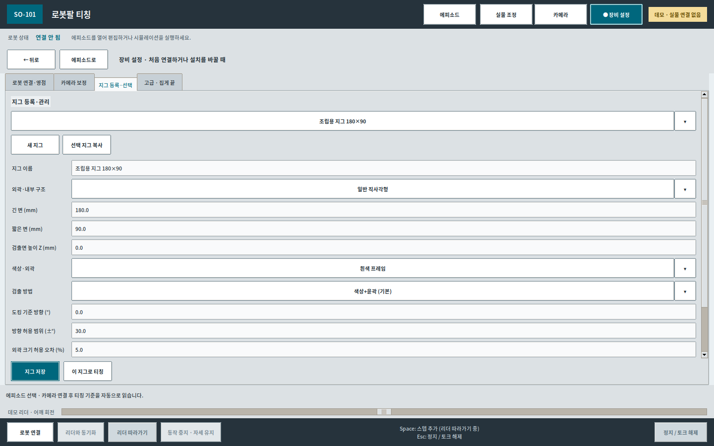
- 지그 등록·관리 또는 장비 설정 → 지그 등록·선택을 엽니다.
- 새 지그를 누르고 구별할 이름을 입력합니다. 비슷한 지그는 선택 지그 복사로 시작합니다.
- 외곽만 볼 때는 직사각형, 내부 구멍이 있는 파렛트는 도넛형 (내부 구멍 있음)을 선택합니다.
- 긴 변·짧은 변·검출면 높이와 색상·검출 방법을 입력하고 지그 저장을 누릅니다.
- 이 지그로 티칭을 누르거나 에피소드 화면의 새 스텝의 지그에서 선택합니다.
- 카메라의 감지 범위 직접 지정으로 해당 지그의 범위를 저장합니다.
다른 지그도 같은 에피소드에서 선택해 새 스텝을 저장할 수 있습니다. 기존 스텝의 지그는 스텝 설정에서 변경합니다. 목록 선택이나 지그 치수 편집으로 기존 에피소드의 기준을 자동 변경하지 않습니다.
정사각형도 지원하며 90° 대칭은 도킹 기준 방향으로 구분합니다. 도넛형도 고정된 내부 칸 수를 요구하지 않습니다. 같은 외곽이 여러 개 보이면 감지 범위로 하나를 지정하세요.
10. 저장된 TCP·설치값으로 바로 실행

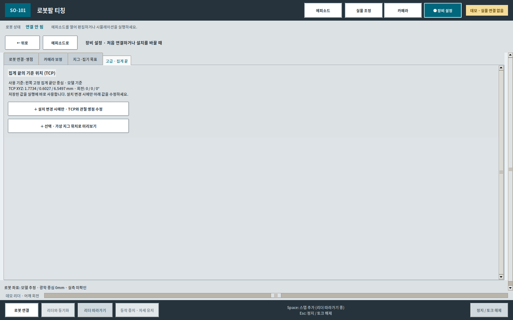
현재 TCP·로봇·카메라 설치값을 기본으로 사용합니다. 실측 확인 체크나 모델값 사용 승인을 다시 요구하지 않습니다.
- TCP: 왼쪽 고정 집게 끝 중심
- 로컬 XYZ: 1.7734 / 0.6027 / 6.5497mm
- 추가 회전·관절 영점 보정: 현재 저장값 사용
- 지그 가로·세로·테두리 높이: 등록값 자동 사용
평소에는 이 탭을 설정할 필요가 없습니다. 설치가 바뀌었을 때만 TCP와 관절 영점 수정을 펼치세요. 가상 지그 미리보기도 선택 기능입니다.
에피소드 선택 → 티칭 기준 자동 저장 → 스텝 저장/실행 순서로 사용합니다. 잘못된 수치·좌표 변환 누락·도달 불가·통신 오류 검사는 유지합니다.
11. 상태 모니터링 버튼과 온도 중단 기준
상단 장비 모니터링 버튼으로 전압·온도·토크 상태를 바로 엽니다. 뒤로 돌아가도 연결·측정은 유지합니다. 종료 상태에서는 마지막 측정값을 표시합니다.
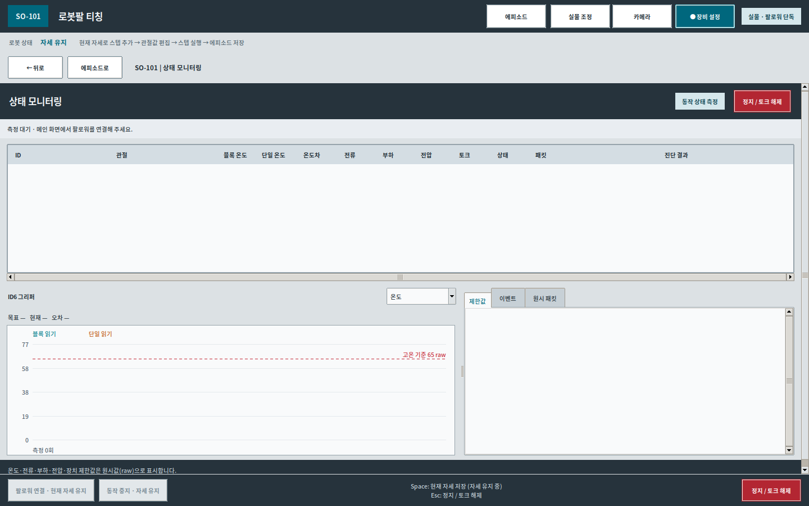
구동 중 raw 65 이상이 연속 5초 유지되면 중단·토크 해제 절차를 수행합니다. 65 미만으로 돌아오면 해당 관절·읽기 경로의 타이머만 초기화합니다.
메인 상태와 모니터 창에 온도 높음 2.0/5초처럼 표시합니다. 스텝·모드가 바뀌어도 타이머를 유지하고 발생·정상 복귀·오류를 로그에 남깁니다.
시작 전 고온·잘못된 데이터·통신 오류·모터 알람은 즉시 차단합니다. 고온 판정 중 새 온도 측정이 1.5초를 초과해 끊겨도 중단합니다.
모터 내부 온도 한도·전압 보호 설정은 변경하지 않았습니다. 순간 읽기값에 따른 중단을 완화하는 처리이며 실제 원인 해결은 아닙니다. GUI를 정상 종료한 뒤 다시 실행하면 적용됩니다. 설정과 적용 범위
12. 버튼이 안 눌리거나 감지가 안 될 때
| 상태 | 확인할 곳 |
|---|---|
| 현재 자세로 스텝 추가가 비활성 | 팔로워 단독은 토크가 꺼진 연결 상태에서도 저장할 수 있습니다. 잠시 멈춘 뒤 저장하세요. 편집창이 열렸거나 계산 중이면 먼저 마치세요. |
| 스텝 실행 / 에피소드 실행이 비활성 | 스텝 선택 또는 에피소드 저장, 팔로워의 자세 유지 상태를 확인하세요. 다른 로봇·데모 파일은 현재 실물에서 실행할 수 없습니다. |
| ± 조정 후 대기 | 최대 2.5초 뒤 버튼이 다시 활성화됩니다. 같은 방향의 작은 요청은 제한 안에서 누적됩니다. 실제 변화량을 확인하세요. |
| 카메라 연결 실패 | 다른 앱의 카메라 사용을 종료하고 ‘카메라 보정 → 카메라 장치 · 해상도 변경’에서 장치를 확인하세요. 기본 해상도는 1280 × 720입니다. |
| 지그 미검출 / 후보 여러 개 | 지그의 전체 외곽이 보이는지, 로봇팔에 가려지지 않았는지 확인하세요. 흰색 프레임과 구별되는 무광 배경·조명으로 경계를 드러내고 ‘검출 세부 설정’에서 영역을 좁히세요. 주황색 추정은 실제 테두리 확인이 더 필요하다는 뜻입니다. |
| 픽셀은 보이는데 mm 좌표가 없음 | 카메라 장치·해상도, 렌즈 보정, 로봇 좌표 보정, 지그 높이·크기를 순서대로 확인하세요. 일반 사진의 픽셀 결과만으로 로봇 좌표를 정할 수 없습니다. |
| 집기 경로 계산 실패 | 저장된 집게 끝·지그 값, 현재 지그 측정 결과와 로봇 도달 범위를 확인하세요. SO-101은 위치와 방향의 모든 조합에 도달할 수 없습니다. |
| 지그 기준 없음 / 다시 읽기 실패 | 팔을 물리고 안정 검출과 보정 상태를 확인한 뒤 다시 읽으세요. 다시 읽기가 실패하면 이전 기준도 해제됩니다. 티칭 기준은 유지하며 스텝·에피소드 실행 전에는 현재 지그를 다시 읽습니다. |
| 사진 자동 보정 실패 | 코너 13 × 9개와 20mm 설정, 1280 × 720 사진, 선명한 코너와 다양한 기울기를 확인하세요. 계산 실패 시 이전 보정은 유지됩니다. |
동작 중지 · 자세 유지는 이동을 멈추고 힘을 유지합니다. 정지 / 토크 해제와 Esc는 모터 힘을 풉니다. 힘을 해제할 때 팔이 내려오지 않도록 받쳐 주세요.
저장 위치: /path/to/Final_Arm/OpenCV_teach/teaching
실행 오류 기록: ~/.local/state/opencv-teach/app.log
설명서: 장비 설정의 ‘그림 설명서’ 또는 F1. USB 장치나 보정 파일을 바꿀 때는 앱 종료 후 opencv-teach --setup을 사용하세요.
13. 모터 영점 파일 선택 또는 새 보정
장비 설정 → 로봇 연결·영점 → SO-101 모터 캘리브레이션 · 영점·집게로 이동합니다. 리더·팔로워를 따로 선택할 수 있습니다.
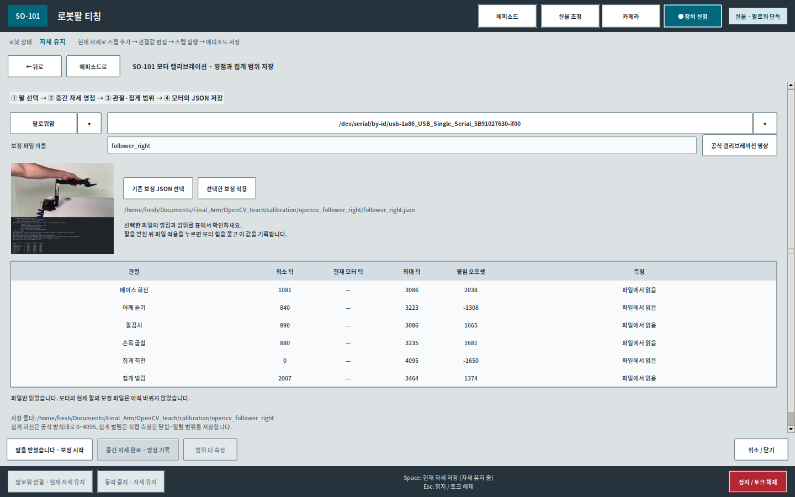
현재 확인된 새 영점으로 에피소드 6개와 Test_teach를 갱신했습니다. 이후 다른 파일을 적용하면 저장 자세를 다시 확인해야 합니다.
이미 보정 파일이 있다면
- 대상 팔과 USB를 확인하고 기존 보정 JSON 선택을 누릅니다.
- 표에서 영점과 범위를 확인합니다. 선택만 하면 파일을 읽기만 합니다.
- 팔을 받치고 선택한 보정 적용을 누릅니다. 힘을 푼 뒤 모터에 기록·읽기 검증하고 현재 팔의 JSON을 저장합니다.
- 앱을 다시 실행합니다.
새로 맞추려면
보정 시작 → 중간 자세 완료 · 영점 기록 → 관절·집게를 양 끝까지 손으로 이동 → 범위 측정 완료 → 모터와 JSON에 저장 순서입니다. 집게 회전은 0~4095 고정 범위입니다.
실패·취소 시 이전 보정 복원을 시도하며 복원 실패는 오류로 표시합니다. 공식 기준: LeRobot SO-101 보정.
14. 왼쪽에서 편집하고 오른쪽 시뮬 확인
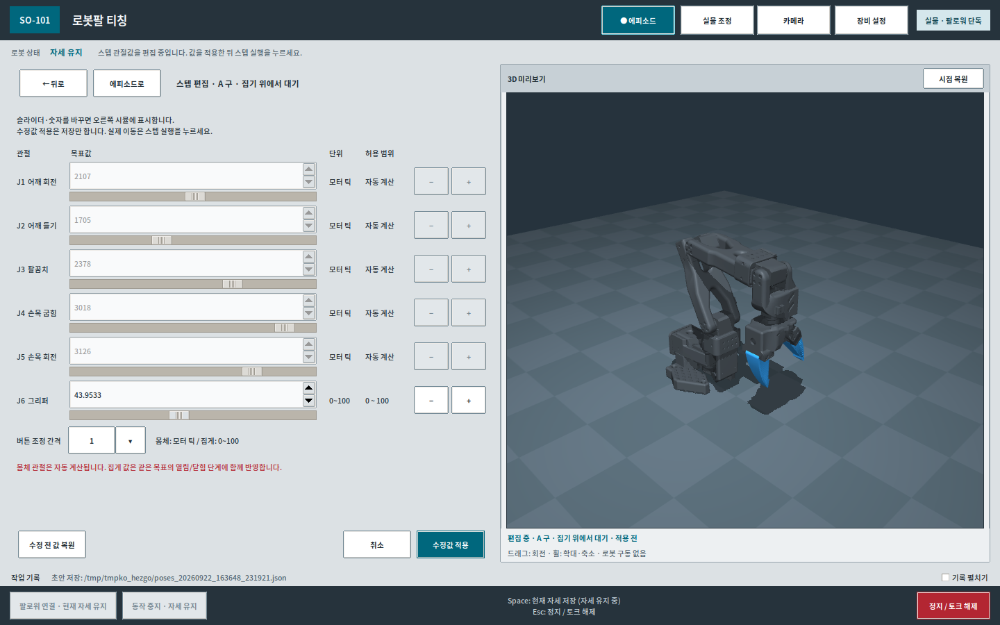
- 실물 관절과 집게: 드래그 중 목표값을 보고 놓으면 한 번 이동합니다.
- 집게 끝 이동: X·Y·높이·방향도 ±2mm 또는 ±2° 슬라이더로 조정합니다.
- 고정 스텝: 몸체는 모터 틱, 집게는 0~100입니다. 지그 보정 스텝: 몸체는 자동 계산되므로 비활성화합니다.
- 집게 열림·닫힘: 집기·놓기 목표 설정에서도 0~100 슬라이더를 사용합니다.
현재 모터 값과 환산 각도는 이동 중에도 표시합니다. 1틱은 약 0.088°이며 실제 이동은 기어 유격·마찰에 따라 달라질 수 있습니다.
실물 슬라이더는 현재값에서 몸체 ±50틱, 집게 ±5 벌림을 요청합니다. 저장 스텝 편집은 전체 보정 범위를 사용합니다.
티칭 파일과 운동학 계산은 기존 각도 단위를 유지합니다. TCP·지그 위치와 방향은 mm·°입니다.
15. 마우스로 지그 감지 범위 지정하기
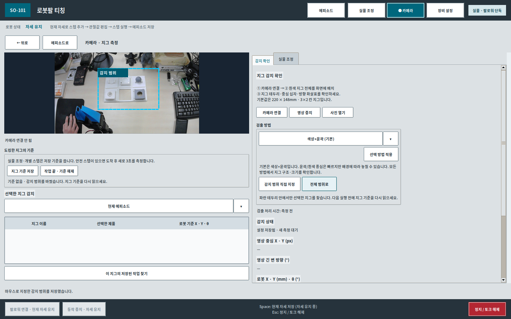
범위는 선택한 지그 설정에 저장됩니다. 같은 지그를 공유하는 부품 목표에도 적용합니다.
- 카메라 → 감지 확인에서 카메라를 연결하거나 사진을 엽니다.
- 범위를 설정할 지그에서 대상을 선택하고 감지 범위 직접 지정을 누릅니다.
- 영상에서 마우스를 누른 채 끌어 사각형을 만듭니다. 놓으면 바로 저장됩니다. 지그가 아직 검출되지 않아도 지정할 수 있습니다.
- 파란 테두리 안에서 지그를 찾습니다. 영상 여백은 범위에 포함하지 않습니다.
- 제한을 없애려면 전체 범위로를 누릅니다.
지그가 도착할 위치와 회전했을 때의 전체 외곽이 들어오도록 지정하세요. 너무 작은 범위는 저장하지 않습니다.
범위를 바꾸면 이전 지그 기준은 해제됩니다. 작업 전에 지그 기준 저장으로 다시 측정하세요.
16. 한 에피소드에서 여러 지그 사용
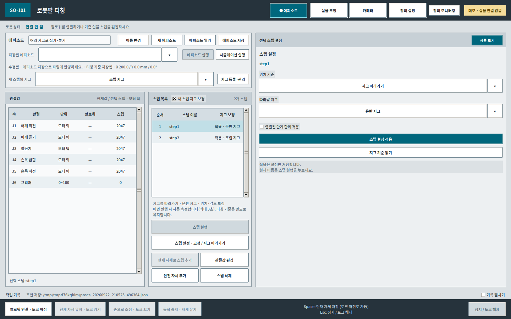
- 새 스텝의 지그에서 지그 A를 선택하고 기준을 읽은 뒤 스텝을 저장합니다.
- 지그 B로 선택을 바꾸고 기준을 읽은 뒤 다음 스텝을 저장합니다. A의 스텝과 기준은 유지됩니다.
- 기존 스텝은 스텝 설정 → 따라갈 지그에서 바꿉니다. 변경할 지그의 티칭 기준이 필요합니다.
- 에피소드 저장 후 실행하면 안전 자세에서 사용 지그를 모두 새로 측정합니다. 개별 스텝은 연결된 지그만 측정합니다. 확정되면 에피소드 화면으로 돌아가 남은 스텝을 바로 실행합니다.
에피소드 이름 변경: 이름 오른쪽의 이름 변경을 누릅니다. 저장된 파일 경로와 스텝은 유지됩니다.
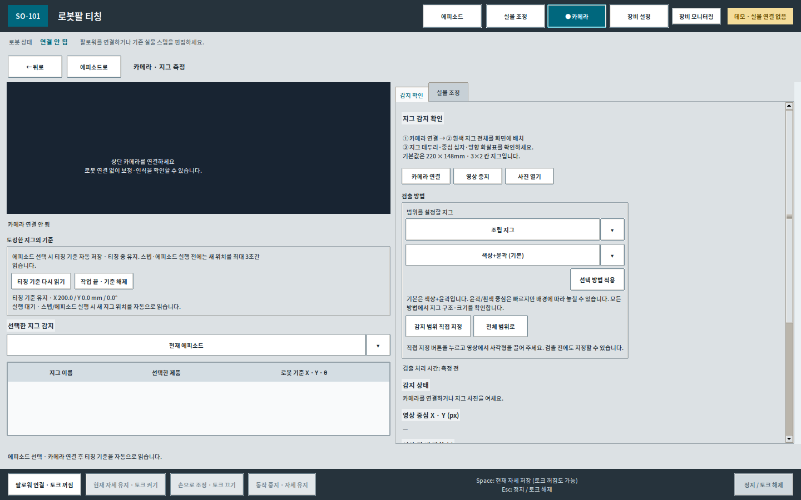
17. 팔로워 손으로 티칭 · 실행 모드
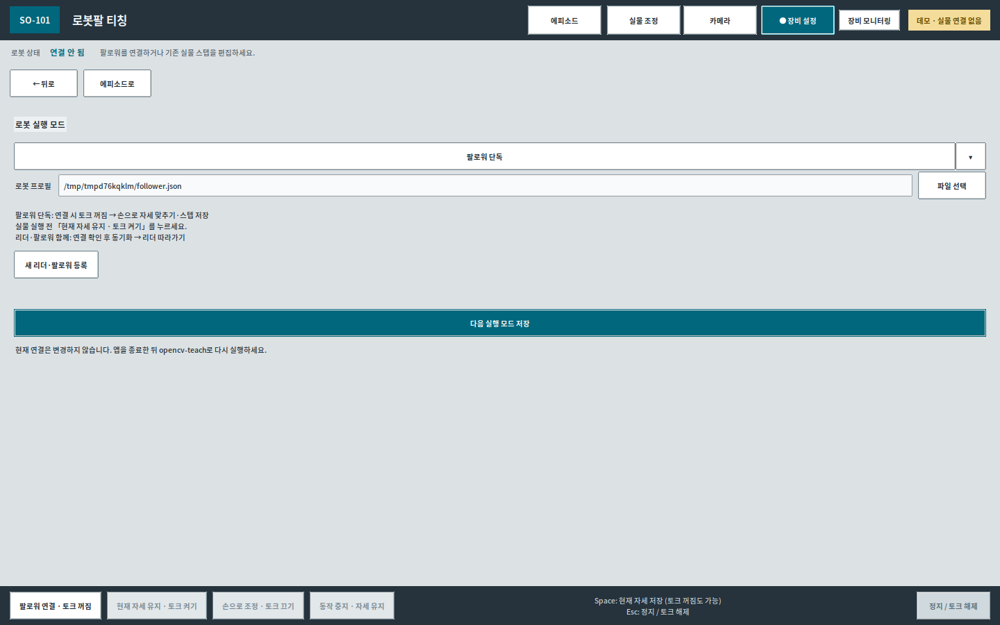
opencv-teach를 실행하고 팔로워 단독 / 리더·팔로워 함께를 선택합니다. 두 팔 모드는 각자의 보정 JSON과 USB 포트가 필요합니다.- 팔로워 단독으로 연결하면 토크가 꺼진 상태입니다. 손으로 자세를 맞추고 잠시 정지한 뒤 현재 자세로 스텝 추가 또는 Space로 저장합니다.
- 실물 조정·실행 전 현재 자세 유지 · 토크 켜기를 누릅니다. 최신 측정 자세에서 힘을 유지합니다.
- 다시 손으로 맞출 때는 팔을 받친 상태에서 손으로 조정 · 토크 끄기를 누릅니다. 연결과 관절값 표시는 유지됩니다.
장비 설정의 실행 모드 저장은 다음 앱 실행에 적용됩니다. 현재 연결 중인 팔을 다른 모드로 전환하지 않습니다.
18. 카메라 마운트에 설치된 SO-101
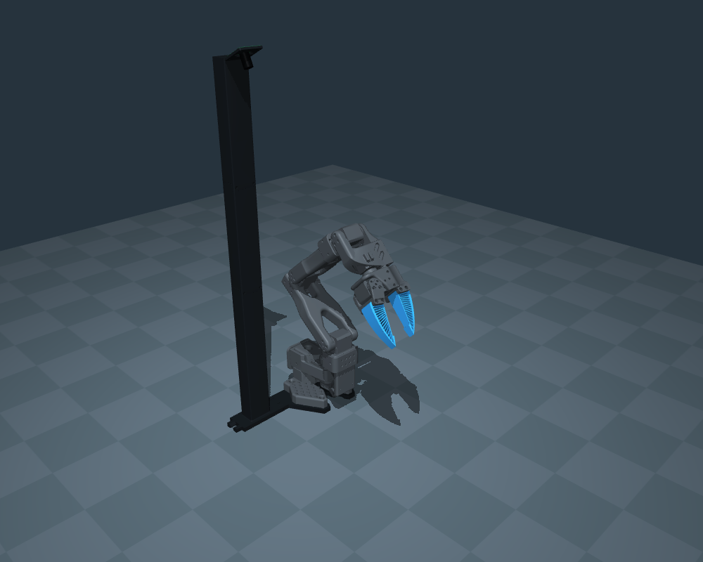
STL 기준으로 로봇의 base_link는 받침 바닥보다 7.4mm 위입니다. Test_teach는 테이블 직결 높이 2.4mm에서 7.4mm로 바꿨으며, 지그와 부품은 테이블 위 높이를 유지합니다.
광학 중심은 PCB 면 중앙, 돌출 거리 0mm입니다. 렌즈의 약 20mm 돌출은 표시용 외형에만 반영하며 좌표에 더하지 않습니다. 기존 카메라-로봇 좌표 변환은 그대로 사용합니다.
마운트는 위치 확인용 형상입니다. 충돌 계산에는 포함하지 않았고 실물 설치 높이를 새로 측정한 결과는 아닙니다.
19. STL 형상과 도킹 기준 방향
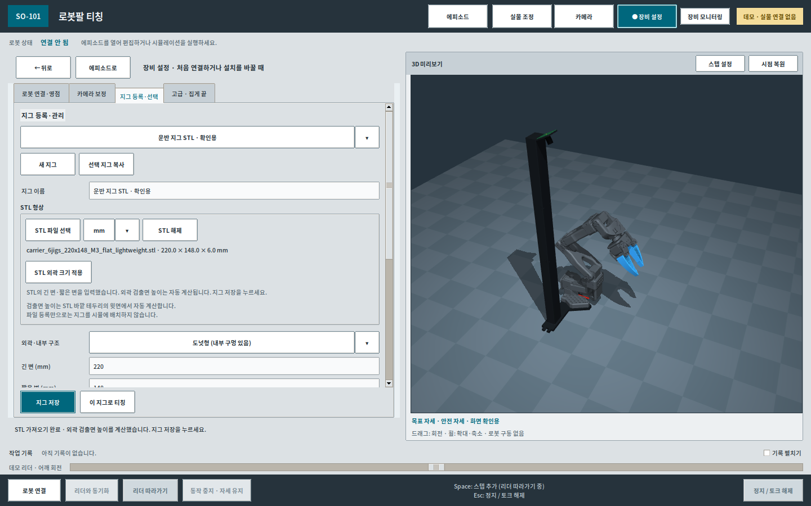
- STL 파일 선택에서 단위를 확인하고 파일을 엽니다.
- 직사각형 / 도넛형 (내부 구멍 있음)을 선택합니다. 도넛형은 원형 외곽이 아니라 구멍 있는 직사각형 프레임입니다.
- STL 외곽 크기 적용 후 지그를 저장합니다. 도넛형은 STL의 외곽 윗면의 개구부 배치를 참고합니다.
- 카메라 연결 후 카메라 각도 가져오기를 누르면 감지 화면으로 이동해 최대 3초 측정하고 관리 화면으로 돌아옵니다.
- 측정 각도가 도킹 기준 방향에 입력됩니다. 지그 저장으로 확정합니다. 실패하면 기존 방향을 유지합니다.
방향은 로봇 앞 0°, 왼쪽 90°입니다. 직사각형은 180°, 정사각형은 90° 대칭 중 기존 기준에 가까운 방향을 선택합니다.
가상 배치는 제거했습니다. 220×148 지그의 외곽 윗면은 4.8mm입니다. 다운로드의 파렛트는 70×70×25mm이며 외곽 윗면은 20mm입니다. 현재 테이블 바닥 Z −7.4mm를 더해 검출면 높이를 계산합니다.
20. 검출한 지그 위치를 3D에 표시
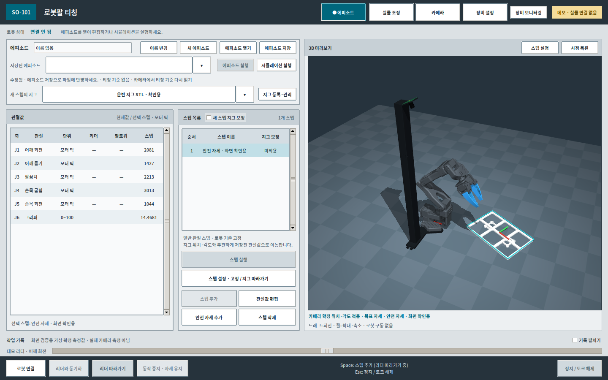
에피소드 실행 시 지그 기준이 확정되면 XY·각도를 3D에 반영하고 에피소드 화면으로 돌아와 이어서 실행합니다. 기준을 해제하면 지그 표시도 사라집니다.
STL 외곽 윗면을 등록 검출면 Z에 맞춥니다. 카메라로 깊이를 새로 측정하는 기능은 아닙니다. STL이 없거나 치수가 다르면 측정 외곽만 표시합니다.
도넛형은 구멍 경계가 보여야 합니다. 여러 구멍의 STL은 큰 구멍 두 곳 이상을 비교합니다. 흰 바탕·부품으로 구멍이 가려지면 확정하지 못할 수 있습니다. STL로 새로운 질량·충돌 모델은 추가하지 않습니다.